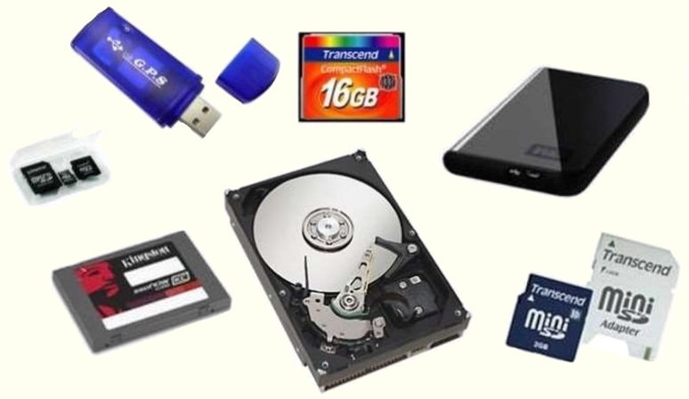
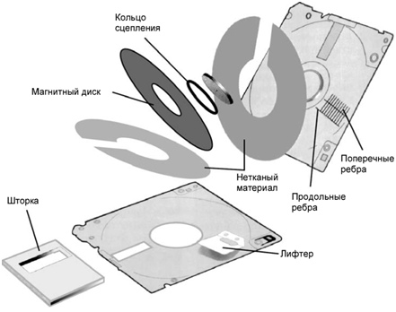
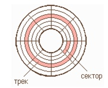
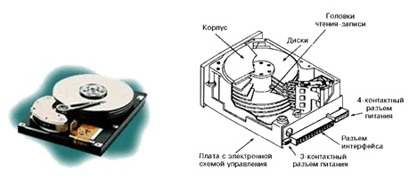

Внешняя память
Данный раздел сайта посвящен внешней памяти компьютера и работе с ней.
Основной функцией внешней памяти является способность долговременно хранить информацию. Кроме этого внешняя память имеет больший объем и дешевле оперативной, а носители внешней памяти обеспечивают перенос информации с одного компьютера на другой, что важно в ситуации, когда отсутствуют компьютерные сети.
Что такое внешняя память?
Внешняя (долговременная) память или ВЗУ — это место длительного хранения данных (программ, результатов расчетов, текстов и т.д.), не используемых в данный момент в оперативной памяти компьютера. Внешняя память, в отличие от оперативной, является энергонезависимой и не имеет прямой связи с процессором.
Свойства внешней памяти следующие:
- внешняя память энергонезависима: информация в ней сохраняется независимо от того, включен или выключен компьютер, вставлен носитель в компьютер или лежит на столе;
- внешняя память медленнее по сравнению с оперативной;
- в порядке возрастания скорости чтения/записи информации, устройства внешней памяти располагаются так: магнитные ленты—магнитные диски—оптические диски;
- объем информации, помещающейся во внешней памяти, больше, чем во внутренней; а с учетом возможности смены носителей неограничен.
В отличие от оперативной памяти, внешняя память не имеет прямой связи с процессором. Пример цепочки, по которой циркулирует информация от ВЗУ к процессору и обратно:
Работа с внешней памятью
Для работы с внешней памятью необходимо наличие накопителя (устройства, обеспечивающего запись и (или) считывание информации) и устройства хранения — носителя.
Основные виды накопителей:
- Накопители на гибких магнитных дисках (НГМД);
- Накопители на жестких магнитных дисках (НЖМД);
- Стримеры;
- Накопители CD-ROM, CD-RW, CD-R, DVD;
- USB-flash накопитель.
Им соответствуют основные виды носителей:
- гибкие магнитные диски (Floppy Disk);
- жесткие магнитные диски (Hard Disk);
- диски CD-ROM, CD-R, CD-RW, DVD;
- flash-карты.
Основные характеристики накопителей и носителей:
- информационная емкость;
- скорость обмена информацией;
- надежность хранения информации.
В основу записи, хранения и считывания информации из внешней памяти положены два принципа: магнитный и оптический. Благодаря им обеспечивается сохранение информации и после выключения компьютера.
Разберём подробнее каждый из видов.
Накопители на гибких магнитных дисках

Гибкий диск (англ. floppy disk) или дискета — носитель небольшого объема информации, представляющий собой гибкий пластиковый диск в защитной оболочке. Используется для переноса данных с одного компьютера на другой и для распространения программного обеспечения.
Дискета состоит из круглой полимерной подложки, покрытой с обеих сторон магнитным окислом и помещенной в пластиковую упаковку, на внутреннюю поверхность которой нанесено очищающее покрытие. В упаковке сделаны с двух сторон радиальные прорези, через которые головки считывания/записи накопителя получают доступ к диску.
Способ записи двоичной информации на магнитной среде называется магнитным кодированием. Он заключается в том, что магнитные домены в среде выстраиваются вдоль дорожек в направлении приложенного магнитного поля своими северными и южными полюсами. Обычно устанавливается однозначное соответствие между двоичной информацией и ориентацией магнитных доменов.
Информация записывается по концентрическим дорожкам (трекам), которые делятся на сектора. Количество дорожек и секторов зависит от типа и формата дискеты. Сектор хранит минимальную порцию информации, которая может быть записана на диск или считана. Ёмкость сектора постоянна и составляет 512 байтов.
В настоящее время наибольшее распространение получили дискеты со следующими характеристиками: диаметр 3,5 дюйма (89 мм), ёмкость 1,44 Мбайт, число дорожек 80, количество секторов на дорожках 18.

Дискета устанавливается в накопитель на гибких магнитных дисках, автоматически в нем фиксируется, после чего механизм накопителя раскручивается до частоты вращения 360 мин-1 . В накопителе вращается сама дискета, магнитные головки остаются неподвижными. Дискета вращается только при обращении к ней. Накопитель связан с процессором через контроллер гибких дисков.
В последнее время появились трехдюймовые дискеты, которые могут хранить до 3 Гбайт информации. Они изготавливаются по новой технологии Nano2 и требуют специального оборудования для чтения и записи. Подробнее об этапах производства можно почитать на данном сайте.
Накопители на жестких магнитных дисках
Накопитель на жёстких магнитных дисках (англ. HDD – Hard Disk Drive) или винчестерный накопитель — это наиболее массовое запоминающее устройство большой ёмкости, в котором носителями информации являются круглые алюминиевые пластины — плоттеры, обе поверхности которых покрыты слоем магнитного материала. Используется для постоянного хранения информации — программ и данных.

Как и у дискеты, рабочие поверхности плоттеров разделены на кольцевые концентрические дорожки, а дорожки — на сектора. Головки считывания-записи вместе с их несущей конструкцией и дисками заключены в герметично закрытый корпус, называемый модулем данных. При установке модуля данных на дисковод, он автоматически соединяется с системой, подкачивающей очищенный охлажденный воздух. Поверхность плоттера имеет магнитное покрытие толщиной всего лишь в 1,1 мкм, а также слой смазки для предохранения головки от повреждения при опускании и подъёме на ходу. При вращении плоттера над ним образуется воздушный слой, который обеспечивает воздушную подушку для зависания головки на высоте 0,5 мкм над поверхностью диска.
Винчестерные накопители имеют очень большую ёмкость: от 10 до 100 Гбайт. У современных моделей скорость вращения шпинделя (вращающего вала) обычно составляет 7200 об/мин, среднее время поиска данных 9 мс, средняя скорость передачи данных до 60 Мбайт/с. В отличие от дискеты, жесткий диск вращается непрерывно. Все современные накопители снабжаются встроенным кэшем (обычно 2 Мбайта), который существенно повышает их производительность. Винчестерный накопитель связан с процессором через контроллер жесткого диска.
Так же рекомендуем ознакомиться с данным видео:
Стримеры
Стример — запоминающее устройство, работающее по принципу магнитной записи на ленточном носителе, с последовательным доступом к данным, аналогичен бытовому магнитофону. Основное назначение: запись и воспроизведение информации, архивация и резервное копирование данных.
Технология хранения данных на магнитной ленте в ходе развития вычислительной техники претерпела значительные изменения и в разные периоды характеризовалась различными потребительскими свойствами.
Достоинства и недостатки стримеров представлены в таблице.
| Достоинcтва | Недостатки |
|---|---|
| Большая ёмкость | Низкая скорость произвольного доступа к данным из-за последовательного доступа (лента должна прокрутиться к нужному месту) |
| Низкая стоимость и широкие условия хранения информационного носителя | |
| Надежность | Сравнительно высокая стоимость устройства записи (стримера) |
| Низкое энергопотребление у ленточной библиотеки большого объема |
Современные стримеры, как правило, подключаются через высокопроизводительный интерфейс SAS, обеспечивающий передачу данных со скоростью до 3 или 6 Гбит/с. Старшие модели IBM имеют возможность подключения.
Более подробно о стримерах можно ознакомиться в данном видео:
Накопители на оптических и магнитооптических дисках
CD-ROM (англ. Compact Disk Real Only Memory) – компакт-диск только для чтения
Компакт-диск диаметром 120 мм (около 4,75 дюймов) изготовлен из полимера и покрыт металлической пленкой. Информация считывается именно с этой металлической пленки, которая покрывается полимером, защищающим данные от повреждения. CD-ROM является односторонним носителем информации. Для работы с CD-ROM нужно подключить к компьютеру накопитель CD-ROM, преобразующий последовательность углублений и выступов на поверхности CD-ROM в последовательность двоичных сигналов. Принцип цифровой записи информации на лазерный диск отличается от принципа магнитной записи. Закодированная информация наносится на диск лазерным лучом, который создает на поверхности микроскопические впадины, разделяемые плоскими участками. Цифровая информация представляется чередованием впадин (кодирование нуля) и отражающих свет островков (кодирование единицы). Информация, нанесенная на диск, не может быть изменена.
Доступ к данным на CD-ROM осуществляется быстрее, чем к данным на дискетах, но медленнее, чем на жестких дисках (от 150 до 400 мс при скорости вращения до 4500 об/мин). Скорость передачи данных составляет не менее 150 Кбайт и доходит до 1,2 Мбайта/с. Емкость CD-ROM достигает 780 Мбайт, благодаря чему на них обычно выпускаются мультимедийные программы.
CD-ROM просты и удобны в работе, имеют низкую удельную стоимость хранения данных, практически не изнашиваются, не могут быть поражены вирусами, с них невозможно случайно стереть информацию.
CD-R (Compact Disk Recordable) – записывающий диск
Емкость: в среднем 700 МБ (80 минут). На дисках CD-R отражающий слой выполнен из золотой пленки. Между этим слоем и основой расположен регистрирующий слой из органического материала, темнеющего при нагревании. В процессе записи лазерный луч нагревает выбранные точки слоя, которые темнеют и перестают пропускать свет к отражающему слою, образуя участки, аналогичные впадинам. Накопители CD-R, благодаря сильному удешевлению, приобретают все большее распространение.
CD-RW (Compact Disk Rewritable) – многократная запись на диск
Записывающий слой изготавливается из специального сплава халькогенидов, который при нагреве выше температуры плавления переходит из кристаллического агрегатного состояния в аморфное. В отличие от CD-R, данный диск помимо максимальной скорости записи имеет также минимальную, диктуемую фазовыми переходами.
| Название в спецификации | Перевод | Скорость |
|---|---|---|
| Original, "slow" | Обычная медленная | x1-4 |
| High Speed | Быстрая | x4-12 |
| Ultra Speed | Сверхбыстрая | x12-24 |
| Ultra Speed+ | Сверхбыстрая+ | x32 |
DVD (Digital Versatile Disk – универсальный цифровой диск)
Имея те же габариты, что обычный компакт-диск, и весьма похожий принцип работы, он вмещает чрезвычайно много информации: от 4,7 до 17 Гбайт. Возможно, именно из-за большой емкости он и называется универсальным. Правда, в настоящее время реально применяется DVD-диск лишь в двух областях: для хранения видеофильмов (DVD-Video или просто DVD) и сверхбольших баз данных (DVD-ROM, DVD-R).
Разброс емкостей возникает так: в отличие от CD-ROM, диски DVD записываются с обеих сторон. Более того, с каждой стороны могут быть нанесены один или два слоя информации. Таким образом, односторонние однослойные диски имеют объем 4,7 Гбайт (их часто называют DVD-5, т.е. диски емкостью около 5 Гбайт), двусторонние однослойные - 9,4 Гбайт (DVD-10), односторонние двухслойные — 8,5 Гбайт (DVD-9), а двусторонние двухслойные — 17 Гбайт (DVD-18).
В целях сохранности информации лазерные диски необходимо предохранять от механических повреждений (царапин), а также от загрязнения.
USB-flash накопитель
Запоминающее устройство, использующее в качестве носителя flash-память и подключаемое к компьютеру или иному считывающему устройству по интерфейсу USB. Основное назначение USB-накопителей — хранение, перенос и обмен данными, резервное копирование, загрузка операционных систем (LiveUSB) и др. USB-флешки обычно съемные и перезаписываемые.
Обычно устройство имеет вытянутую форму и съемный колпачок, прикрывающий разъем. Современные флешки могут иметь самые разные размеры и способы защиты разъема. Обычный размер — 3–5 см, вес — меньше 60 г. Объем памяти на флешках постоянно растет. Если не так давно предельными значениями объема памяти для флешки считались 2 Гб и 4 Гб, то сейчас эти значения выросли до 32 Гб и 64 Гб. Безусловно, с развитием технологий растет и объем памяти flash-накопителей.
К недостаткам flash-памяти следует отнести то, что не существует единого стандарта и различные производители изготавливают несовместимые друг с другом по размерам и электрическим параметрам карты памяти.
Так же рекомендуем посмотреть видео на данную тему: